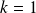
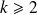
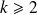

Méthode utilisant un schéma explicite
Toutes les premières questions de cette partie aboutissent à l'établissement du schéma numérique explicite qui va permettre de calculer numériquement la température en chaque point pour tous les instants .
, avec
 .
.
Cette expression est valable pour
, et
 et
.
et
.
II.B.2.j.
Dans cette question, on élabore une fonction schema_explicite permettant de calculer la température en chaque point au cours du temps selon la formule précédente. Parmi les variables d'entrée se trouvera un vecteur T0 de dimension ܰ
 , défini en dehors de la fonction, contenant les valeurs de la température aux points de discrétisation à l'instant initial. Au sein de la fonction, un algorithme calculera itérativement la température avec un nombre maximal d'itérations
, défini en dehors de la fonction, contenant les valeurs de la température aux points de discrétisation à l'instant initial. Au sein de la fonction, un algorithme calculera itérativement la température avec un nombre maximal d'itérations
 . En sortie de la fonction, on récupérera le nombre d'itérations réellement effectuées, nbIter et une matrice T_tous_k, de dimensions
. En sortie de la fonction, on récupérera le nombre d'itérations réellement effectuées, nbIter et une matrice T_tous_k, de dimensions
 . Chaque colonne de cette matrice contient le vecteur
. Chaque colonne de cette matrice contient le vecteur
 dont les éléments sont les valeurs de la température aux N points
dont les éléments sont les valeurs de la température aux N points
 (points à l'intérieur du mur) à l'instant ݇k :
(points à l'intérieur du mur) à l'instant ݇k :
 et T_tous_k =
et T_tous_k =
On souhaite arrêter le calcul lorsque la température ne varie presque plus dans le temps. Dans ce but, on évaluera la norme 2 de
 à chaque itération. La définition de la norme 2 est rappelée à la question II.B.2.j.(vi).
à chaque itération. La définition de la norme 2 est rappelée à la question II.B.2.j.(vi).
À présent, le sujet guide les candidat-e-s de manière très directive, avec une rédaction pas à pas du programme recherché. C'est une manière envisageable de poser les sujets d'informatique, autant se plier à l'exercice.
Question
Écrire l'en-tête de la fonction en précisant bien les paramètres d'entrée et de sortie.
def schema_explicite(T0, ItMax, Dt, N, e = 40e-2, Lambda = 1.65, Rho = 2150, \
c = 1000, T_int = 293, T_ext = 263, epsilon = 1e-2):
'''renvoie le nombre d'iterations effectuees et une matrice de N lignescontenant les temperatures a l'instant k en chaque point declare de la paroi,par la methode des differences finies en utilisant un schema explicite.'''Alpha = Rho * c / Lambda
Dx = e / (N + 1)
r = Dt / (Alpha * pow(Dx, 2))
Remarque :
J'ai dû compléter, au fur et à mesure de la rédaction de cette partie, la liste des arguments, notamment ceux ayant une valeur par défaut.
Question
Le schéma numérique établi permet d'approcher avec succès la solution à la condition . Programmer un test qui avertit l'utilisateur si cette condition n'est pas respectée.
if r >= 0.5 :
raise Exception('''r = Dt / ( (rho * c / lambda) * Dx^2 ) doit etre inferieur à 0.5.''')
Je propose ici une solution hors programme qui permet de provoquer une erreur et d'interrompre le programme, mais en indiquant dans l'erreur affichée par la console le commentaire indiqué entre parenthèses.
Remarque :
Un simple print était recevable, et attendu pour ce sujet de concours.
Question
Affecter la valeur 2 000 à ItMax. Créer la matrice T_tous_k de dimensions
en la remplissant de zéros.
ItMax doit être défini hors de la fonction schema_explicite puisque nous l'avons déclaré dans les arguments.
ItMax = 2000
Par contre, T_tous_k doit être initialisé dans l'espace globale de la fonction schema_explicite.
T_tous_k = np.zeros((N, ItMax))
Question
Remplacer la première colonne de T_tous_k par le vecteur des valeurs initiales T0.
for i in range(N):
T_tous_k[i, 0] = T0[i, 0]
Remarque :
L'utilisation des indices [ligne, 0] est possible avec le type array de numpy.
Question
Calculer le profil de température à l'instant

(
 ), en distinguant le cas
, le cas
et le cas
. Affecter ces valeurs à la deuxième colonne de T_tous_k.
), en distinguant le cas
, le cas
et le cas
. Affecter ces valeurs à la deuxième colonne de T_tous_k.
Attention :
Le vecteur
et la matrice T_tous_k définis au début de cette partie représentent les valeurs de la température aux points à l'intérieur de la paroi, donc bien pour
, donc à l'exception de
et
 , comme le pointait la question II.B.2.i.
, comme le pointait la question II.B.2.i.
Par contre, dans la définition de ces données sous forme d'array numpy, ils correspondent à des indices tels que et et .
Ici, k = 0, et on cherche à déterminer .
Pour , c'est à dire indice = 0 :
avec .
D'où le code suivant :
T_tous_k[0, 1] = r * T_int + (1 - 2 * r) * T_tous_k[0, 0] + \
r * T_tous_k[1, 0]
Pour , c'est à dire 1 <= indice <= N - 2 :
for indice in range(1, N - 1):
T_tous_k[indice, 1] = r * T_tous_k[indice - 1, 0] + \
(1 - 2 * r) * T_tous_k[indice, 0] + \
r * T_tous_k[indice + 1, 0]
Pour , c'est à dire indice = N - 1 :
avec .
T_tous_k[N - 1, 1] = r * T_tous_k[N - 2, 0] + \
(1 - 2 * r) * T_tous_k[N - 1, 0] + \
r * T_ext
Question
Écrire une fonction calc_norme qui calcule la norme 2 d'un vecteur. On rappelle que la norme 2 d'un vecteur V s'écrit :
avec
def calc_norme(V):
'''renvoie la norme 2 du vecteur V de type array. La norme 2 vautsqr ( somme (i de 1 a N) Vi^2 ).'''return( pow( sum( [pow(vi, 2) for vi in V] ), 0.5 ) )
Question
Élaborer une boucle permettant de calculer itérativement le profil de température aux instants
 avec

. Cette boucle sera interrompue lorsque la norme 2 du vecteur
deviendra inférieure à
ou lorsque le nombre d'itérations atteindra la valeur
(prévoir les deux cas). Utiliser, pour cela, la fonction calc_norme définie à la question précédente.
avec

. Cette boucle sera interrompue lorsque la norme 2 du vecteur
deviendra inférieure à
ou lorsque le nombre d'itérations atteindra la valeur
(prévoir les deux cas). Utiliser, pour cela, la fonction calc_norme définie à la question précédente.
k = 2
condition = True
while condition and k < ItMax - 1 :
T_tous_k[0, k] = r * T_int + (1 - 2 * r) * T_tous_k[0, k - 1] + \
r * T_tous_k[1, k - 1]
for indice in range(1, N - 1):
T_tous_k[indice, k] = r * T_tous_k[indice - 1, k - 1] + \
(1 - 2 * r) * T_tous_k[indice, k - 1] + \
r * T_tous_k[indice + 1, k - 1]
T_tous_k[N - 1, k] = r * T_tous_k[N - 2, k - 1] + \
(1 - 2 * r) * T_tous_k[N - 1, k - 1] + \
r * T_ext
if calc_norme(T_tous_k[:, k] - T_tous_k[:, k - 1]) < epsilon :
condition = False
k += 1
Question
Écrire la fin de la fonction afin de renvoyer tous les arguments de sortie définis au début de cette partie.
return (k - 1, T_tous_k)